Infinite plane with a circular hole.
Contents
Link to the m-file.
Description
An infinite medium with a cylindrical hole with circular cross-section of radius 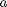, is subject to uniform tension  in the X direction (Figure 1). The symmetry of the problem allows us to consider just quarter of the immediate neighborhood of the hole, where the remainder of the infinite medium is replaced with tractions applied on the exterior boundary.
in the X direction (Figure 1). The symmetry of the problem allows us to consider just quarter of the immediate neighborhood of the hole, where the remainder of the infinite medium is replaced with tractions applied on the exterior boundary.
| 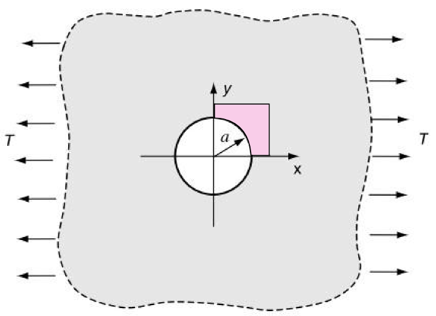 |
| Figure 1. Definition of the geometry of the neighborhood of the circular hole in an infinite plane |
Analytical solution is available in Reference 1. The stresses in a cylindrical coordinate system are shown in Figure 2.
| 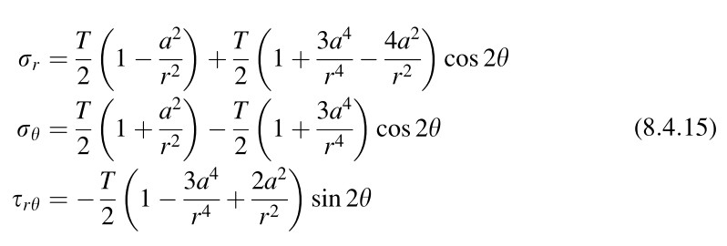 |
| Figure 2. The stresses in the uniaxial-tension loaded plate in cylindrical coordinates |
References
1. Sadd, MH, Elasticity. Theory, Applications, and Numerics, Elsevier, Butterworth Heinemann, 2005. Page 165: Example 8-7: Infinite medium with the stress-free hole under uniform far-field tension loading.
Solution
This tutorial uses the mechanism of bundled algorithms. The solution is obtained with the algorithm deformation_linear_statics().
function pub_plane_w_hole
We consider the material properties of steel here, but the solution is in fact independent of the particular set of material parameters.
U=physical_units_struct;
E=210000*U.MEGA*U.PA;
nu=0.3;
The dimensions of the geometry are as follows:
L= 0.3*U.M; % in-plane dimension W = 0.3*U.M; % in-plane dimension a= 0.15*U.M; % hole radius H = 0.01*U.M; % thickness of the plate tol = a*10e-7;% Geometrical tolerance
This is the traction applied at infinity in the direction of the axis X.
T=1*U.MEGA*U.PA;
The stress components are derived in Reference 1 as shown in Figure 2. In the functions below the stress components are given as functions of location in the Cartesian coordinates, where 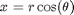 and 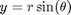.
Component 
function sr =sigmar(x) r=norm(x(1:2)); th =atan2(x(2),x(1)); sr = T/2*(1-a^2/r^2)+T/2*(1+3*a^4/r^4-4*a^2/r^2)*cos(2*th); end
Component 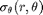
function sth =sigmath(x) r=norm(x(1:2)); th =atan2(x(2),x(1)); sth = T/2*(1+a^2/r^2)-T/2*(1+3*a^4/r^4)*cos(2*th); end
Component 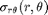
function srth =sigmarth(x) r=norm(x(1:2)); th =atan2(x(2),x(1)); srth = -T/2*(1-3*a^4/r^4+2*a^2/r^2)*sin(2*th); end
Using the expressions for the cylindrical-coordinate components of the stress we can easily derive the Cartesian stress components using the symbolic manipulations in Matlab as
syms T a x r th real %Define symbolic variables % These are the physical components of the stress in cylindrical coords sr = T/2*(1-a^2/r^2)+T/2*(1+3*a^4/r^4-4*a^2/r^2)*cos(2*th); sth = T/2*(1+a^2/r^2)-T/2*(1+3*a^4/r^4)*cos(2*th); srth = -T/2*(1-3*a^4/r^4+2*a^2/r^2)*sin(2*th); %This is the transformation matrix Rm=[cos(th),sin(th);-sin(th),cos(th)]; %scart=Matrix of Cartesian components of the stress scart=Rm'*[sr,srth;srth,sth]*Rm simple(scart) %The output may be compared with the functions defined below % for the Cartesian components of the stress.
As the result we obtain the three functions for the Cartesian stress components that can be now used to define the tractions on the boundary of the computational domain.
function sxx =sigmaxx(x) r=norm(x(1:2)); th =atan2(x(2),x(1)); sxx=(T*(3*a^4*cos(4*th) + 2*r^4 - 3*a^2*r^2*cos(2*th) ... - 2*a^2*r^2*cos(4*th)))/(2*r^4); end function syy =sigmayy(x) r=norm(x(1:2)); th =atan2(x(2),x(1)); syy=-(a^2*T*(3*a^2*cos(4*th) + r^2*cos(2*th) ... - 2*r^2*cos(4*th)))/(2*r^4); end function sxy =sigmaxy(x) r=norm(x(1:2)); th =atan2(x(2),x(1)); sxy=-(a^2*T*(r^2*sin(2*th) - 3*a^2*sin(4*th) ... + 2*r^2*sin(4*th)))/(2*r^4);; end
First we will deal with a 2-D, plane strain model.
The mesh is constructed using the utility for meshing a block with an elliptical hole. These are the numbers of element edges on the sides of the block and radially.
nL=8; nW=8; na=15;
Note that we are arbitrarily setting the thickness of the slice to H.
[fens,fes]=Q4_elliphole(a,a,L,W,nL,nW,na,struct('other_dimension',H));
For accuracy we will convert the original mesh to serendipity quadratic elements.
[fens,fes] = Q4_to_Q8(fens,fes,struct('other_dimension',H)); % Compose the model data clear model_data model_data.fens =fens;
The region needs to define the model-dimension reduction method since this is a two-dimensional finite element model. In this case we're dealing with plane strain.
clear region region.fes= fes; region.reduction = 'strain';; region.E =E; region.nu=nu; region.integration_rule =gauss_rule(struct('dim', 2,'order', 2)); model_data.region{1} =region;
The essential boundary conditions are applied on the planes of symmetry.. First 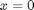:
clear essential essential.component= [1]; essential.fixed_value= 0; essential.node_list = fenode_select (fens,... struct('box',[0,0,-Inf,Inf],'inflate',tol)); model_data.boundary_conditions.essential{1} = essential;
Next 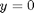:
clear essential essential.component= [2]; essential.fixed_value= 0; essential.node_list = fenode_select (fens,... struct('box',[-Inf,Inf,0,0],'inflate',tol)); model_data.boundary_conditions.essential{2} = essential;
Now we are going to apply the exact tractions as boundary conditions on the sides of the box. First extract the boundary of the domain:
bdry_fes = mesh_boundary(fes, struct('other_dimension',H));
Now select the boundary faces at 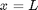.
bclx = fe_select(fens, bdry_fes, ... struct ('box',[L,L,-Inf,Inf],'inflate',tol)); clear traction traction.fes =subset(bdry_fes,bclx);; traction.traction= @(x) ([sigmaxx(x);sigmaxy(x)]); traction.integration_rule =gauss_rule(struct('dim', 1,'order', 3)); model_data.boundary_conditions.traction{1} = traction;
Now select the boundary faces at 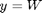.
bcly = fe_select(fens, bdry_fes, ... struct ('box',[-Inf,Inf,W,W],'inflate',tol)); clear traction traction.fes =subset(bdry_fes,bcly);; traction.traction= @(x) ([sigmaxy(x);sigmayy(x)]); traction.integration_rule =gauss_rule(struct('dim', 1,'order', 3)); model_data.boundary_conditions.traction{2} = traction;
Solve the model using the deformation statics algorithm.
model_data =deformation_linear_statics(model_data);
Display the stress 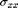. Use the superconvergent patch recovery for postprocessing accuracy.
model_data.postprocessing.stress_component=1;
model_data.postprocessing.stress_units=U.MEGA*U.PA;
model_data.postprocessing.use_spr=1;
model_data=deformation_plot_stress(model_data);
view (2);
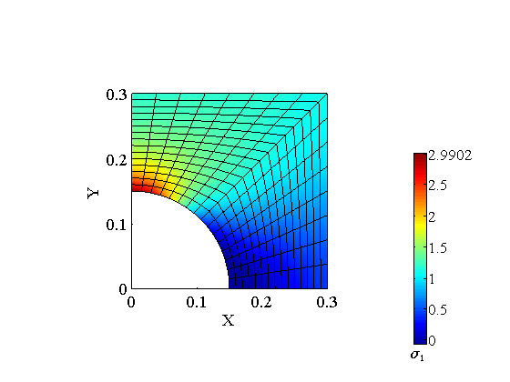 The display of the stress can be compared with the analytical stress-concentration factor which is 3.0:
sigmaxx([0,a])/T
ans =
3
Here we are going to display the same information as above but in a slightly different way. We are going to scale the the stress component not with the physical units, but with the maximum stress (attained on the surface of the hole). As a result, the color contours will be an coding stress values between zero and one (1.0). Therefore, this is an indication of the accuracy of the predicted magnitude of the stress. Ideally (with perfect accuracy) the maximum value would be 1.0.
model_data.postprocessing.gv=[];
model_data.postprocessing.stress_component=1;
model_data.postprocessing.stress_units=sigmaxx([0,a]);
model_data.postprocessing.use_spr=1;
Just for kicks were going to use blue-to-red-through-white colormap.
model_data.postprocessing.colormap=bwr;
model_data=deformation_plot_stress(model_data);
view (2);
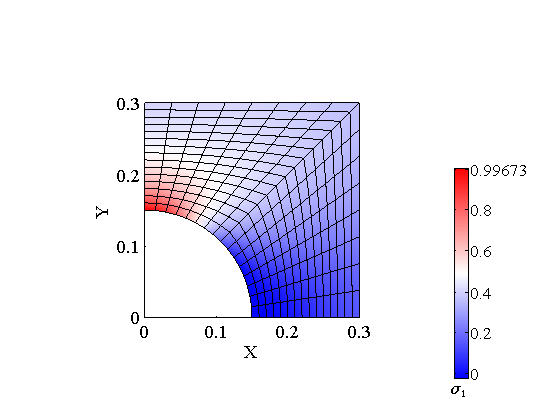 Apparently, the stress concentration is predicted within 1% error.
The same setup is next solved with a three-dimensional solid mesh. The initial step is the same: mesh the two-dimensional domain of the neighborhood of the hole.
nL=4; nW=4; na=7;
[fens,fes]=Q4_elliphole(a,a,L,W,nL,nW,na,struct('other_dimension',H));
In the next mesh-construction step we will extrude the cross-section in the thickness direction.
nH=1;% Number of elements through the thickness
[fens,fes] = H8_extrude_Q4(fens,fes,nH,@(x,i)([x,0]+[0,0,H*i]));
The hexahedral elements are now converted to serendipity 20-node bricks.
[fens,fes] = H8_to_H20(fens,fes);
%
The formulation of the model data is essentially identical to the one for the plane-strain model. The differences are few, and they are indicated with
%<==
clear model_data model_data.fens =fens; clear region region.fes= fes; region.E =E; region.nu=nu;
3-D integration rule.
region.integration_rule =gauss_rule(struct('dim', 3,'order', 2));%<== model_data.region{1} =region; clear essential essential.component= [1]; essential.fixed_value= 0;
3-D selection box, here and in the next two essential boundary conditions.
essential.node_list = fenode_select (fens,... struct('box',[0,0,-Inf,Inf,-Inf,Inf],'inflate',tol));%<== model_data.boundary_conditions.essential{1} = essential; clear essential essential.component= [2]; essential.fixed_value= 0; essential.node_list = fenode_select (fens,... struct('box',[-Inf,Inf,0,0,-Inf,Inf],'inflate',tol));%<== model_data.boundary_conditions.essential{2} = essential;
Note that we are constraining those Z displacements to zero in order to mimic the plane-strain condition.
clear essential essential.component= [3]; essential.fixed_value= 0; essential.node_list = [fenode_select(fens,... struct('box',[-Inf,Inf,-Inf,Inf,0,0],'inflate',tol)),... fenode_select(fens,... struct('box',[-Inf,Inf,-Inf,Inf,H,H],'inflate',tol))];%<== model_data.boundary_conditions.essential{3} = essential; bdry_fes = mesh_boundary(fes, []); bclx = fe_select(fens, bdry_fes, ... struct ('box',[L,L,-Inf,Inf,-Inf,Inf],'inflate',tol)); clear traction traction.fes =subset(bdry_fes,bclx);;
3-D traction vector, no forcing in the Z direction, here and below
traction.traction= @(x) ([sigmaxx(x);sigmaxy(x);0]);%<==
2-D integration rule, here and below.
traction.integration_rule =gauss_rule(struct('dim', 2,'order', 2));%<== model_data.boundary_conditions.traction{1} = traction; bcly = fe_select(fens, bdry_fes, ... struct ('box',[-Inf,Inf,W,W,-Inf,Inf],'inflate',tol)); clear traction traction.fes =subset(bdry_fes,bcly);; traction.traction= @(x) ([sigmaxy(x);sigmayy(x);0]); traction.integration_rule =gauss_rule(struct('dim', 2,'order', 2));%<== model_data.boundary_conditions.traction{2} = traction;
Solution and postprocessing are essentially identical to the plane-strain case.
model_data =deformation_linear_statics(model_data);
model_data.postprocessing.stress_component=1;
model_data.postprocessing.stress_units=U.MEGA*U.PA;
model_data.postprocessing.use_spr=1;
model_data=deformation_plot_stress(model_data);
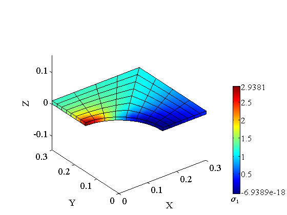 Discussion
The hole in an infinite medium is a useful analytical model. Here we have successfully modeled the situation both with a plane-strain two-coordinate model and a fully-three-dimensional model.
end